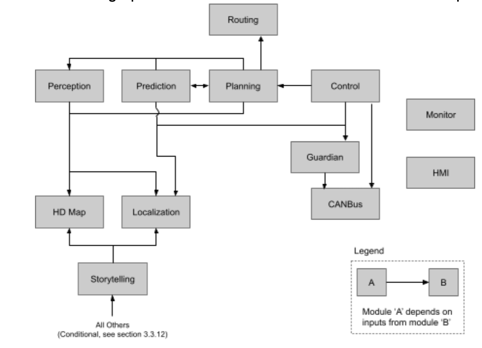
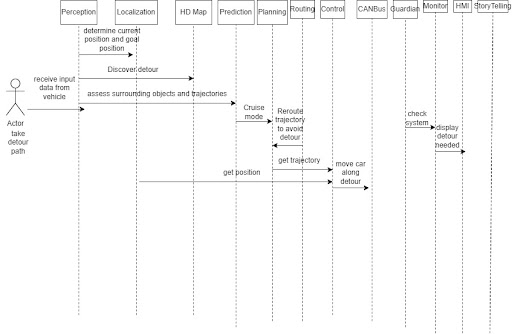
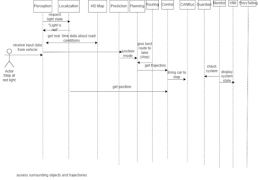

Assignment 1 : Conceptual Architecture
1. Abstract
As the widespread adoption of autonomous vehicles approaches the reality of the complexity and depth of their systems grows ever more intricate. A strong fundamental understanding of how these systems function and interact is key to being able to further their development. Thus, this study aims to extract the architectural documentation of the Apollo system to demonstrate possible avenues for expansion in the future,as well as accurately mapping the underlying systems.
2. Introduction
2.1 Purpose
The purpose of this document is to provide a comprehensive architectural analysis of the Apollo autonomous vehicle system. This will be achieved by looking at three main aspects of Apollo’s design; architectural style/structure, system goals and the various modules that make the former possible. This is done with the intent to capture the unique design decisions applied by the Apollo system and format them in a manner that briefly and effectively conveys this information to stakeholders of the system.
2.2 Organization
The document will be organized into distinct parts focusing on the myriad of analytical avenues available to fully explore the architectural systems of Apollo. This begins with summarizing the architecture, before delving deeper and analyzing the system goals and the modules that are used to achieve them. Following on from this, the document will describe the system through the lens of several architectural views. This will include use case, logic, data, and deployment. Finally it will conclude with a brief overarching summary of the system and possible future courses for the project.
3. Architecture
3.1 Style & Structure
The Apollo architecture consists of a series of software modules exchanging information with each other in real-time as the vehicle operates. Each module is designed to satisfy a specialized subset of responsibilities within the system.
The modules are all implemented separately, though most of them rely on input data from other modules. This is accomplished through a system of subscriptions & publications. Every module 'subscribes' to a set of other modules on which it may depend to receive input data. As each module completes its own tasks it 'publishes' relevant information as outputs to the modules subscribed to it. Publication events resultantly invoke methods in subscribed modules implicitly, without requiring modules to ever make specific function or method calls to one another. This structure perfectly matches the implicit invocation architectural style, which itself is often referred to as the publish subscribe model. Figure 1.0 depicts the dependency graph between most core modules in the system.
As of version 5.5, Apollo has 12 core modules in total: Perception, Prediction, Routing, Planning, Control, Guardian, CANBus, HP Map, Localization, Monitor, HMI, and Storytelling. Section 3.3 of this report contains detailed descriptions of each of these module's purposes and interactions with other modules. Figure 2.0 below further depicts the interactions between most core modules in terms of control and data flow. This is the graph used in the most recent versions of official Apollo documentation.
Figure 1.0 Module Dependancy Graph

Figure 2.0 Data & Control Flow (from the Apollo github docs)
3.2 System Goals
There are four main goals of this software, mapping the surrounding area and detecting objects, predicting what paths these objects are on, planning the cars path through these obstacles, and then making sure the car successfully follows this path. If these goals are unable to be met, then the software changes to having a goal of keeping the user safe. Each of the first three goals are handled within their own modules, perception, prediction, and planning and each one works off of the data provided from the one before. Having these parts separated from each other makes the software easier to update as each can be updated separately without risk of affecting the other modules. The fourth goal of making the car successfully follow the path is split between multiple modules including the control module, the guardian module and the CANBus module. This goal is ultimately the most important since if it is not done correctly then achieving the other goals becomes pointless. Having it done over multiple modules makes it so there is not a single point of failure. Since failure within the system at this point could mean a car crash, having the system check that it is running correctly becomes extremely important for the safety of the user. The guardian module is crucial for determining if the software is satisfying the requirements for the four goals to be successful and if it determines it is not then it is the guardian module that changes the goal of the software to keep the user safe. It does this by checking the other modules to see if they are running correctly and if it is found one is not then it will determine the best way to slow the car down to a stop.
3.3 Module Overviews
3.3.1 Perception
The Perception module is the first component in Apollo’s trajectory planning system. Its purpose is to receive input data from the vehicle’s sensor devices and translate that information into models that are usable by other modules.
This module interfaces with the wide array of sensor hardware that Apollo requires. That includes multiple camera, lidar and radar devices mounted on the vehicle. The Perception module uses data from these sensors to identify objects around the vehicle and classify them into distinct object types, such as traffic lights, road lanes, other vehicles, etc. It also collects and organizes relevant information about these objects. The majority of object classification is handled by the obstacle sub-module, which tracks the types, positions and motions of obstacles. This includes identifying road lanes. Traffic light recognition is handled in a separate sub-module, which specifically uses camera inputs to identify junctions and light colours. This sub-module also requires local traffic light data from the Localization and HD Map modules.
Obstacle details are received by the Prediction module for analysis, and traffic light data is received by the Planning module. Thus Prediction and Planning both depend on Perception. The Perception module itself is only dependent on Localization, HD Map, and the vehicle’s sensor devices.
3.3.2 Prediction
The goal of the Prediction module is to predict the trajectories of obstacles and assign priority classes to them. The calculations made by this module are used by the Planning module to determine the safest trajectory, especially in terms of collision avoidance. This module uses four core sub-modules to accomplish its task: container, scenario, evaluator and predictor.
The container sub-module receives and stores input data, including obstacles from the Perception module, localization info from the Localization module, and trajectory plans from the Planning module. The data stored in the container is used by all other sub-modules during their respective calculations.
The scenario sub-module analyzes the vehicle’s current circumstances and identifies its current ‘scenario’ as either: ‘Cruise’ (for when the vehicle is driving along road lanes) or ‘Junction’ (for when the vehicle is in or approaching an intersection). More scenarios could be added to this sub-module if needed.
The evaluator analyzes obstacle information and generates predictions for every obstacle’s future path and velocity. Each path is also assigned a probability. The exact method used to generate these is highly customizable, allowing for different evaluators to be used for different scenarios and obstacle types.
The predictor classifies obstacle paths into distinct trajectory types. The purpose of this is to identify key regions (such as specific lanes or intersections) an obstacle is likely to move into.
The Prediction module uses the conclusions of its various sub-modules to assign each obstacle a predicted trajectory and a priority class, ranging from high-risk to ignorable. This detailed obstacle data is received by the Planning module, making it the only module that depends on Prediction.
3.3.3 Routing
The Routing module serves the purpose of high level navigation. It uses local map data to determine the best possible route to travel from the vehicle’s current location to the desired destination. This module essentially functions like any other navigational application, and thus doesn’t depend on any other Apollo modules. The calculated route is received by the Planning module, which is the only module dependent on Routing.
3.3.4 Planning
The Planning module analyzes input data from other modules to classify the vehicle’s current driving scenario, which in turn determines a path for the vehicle to follow in order to avoid collisions and stay on route. Driving scenarios are general classifications of common road situations, such approaching a stop sign or parking the car. Each scenario has its own set of predetermined optimal behaviours, which are further influenced by input factors like obstacles and route. Resultantly this module is dependent on many other modules in order to function, including Perception, Prediction, Routing, HD Map and Localization. Once the driving scenario has been determined and an optimal trajectory is calculated, this module outputs its plan to the Control module for use in driving the car.
As of version 7.0 there are seven completed driving scenarios, but this system’s highly modular design makes it relatively simple to add more when needed. Additionally, this allows for modifications and fixes to easily be applied to specific driving scenarios without altering the behaviour of others.
3.3.5 Control
The Control module is focused on determining the car's driving path. It does this through the inputs of planning trajectory, car status, localization, and dreamview auto mode change request. With this it outputs the control commands for steering, throttle and brake which happens in the chassis. The main features contained in the control module are Model Reference Adaptive Control(MRAC) and Control Profiling Service. MRAC is an algorithm that takes the planned route and applies an appropriate delay to match when the system wants to switch steering, throttle and break with when it will actually take place. This difference in when the system controls are supposed to go and when they will is caused by the time it takes the output to receive and activate the now control.
3.3.6 Guardian
The Guardian component is added to the system as a safety module. It takes the Monitor module as its input and if the monitor detects any failure within the software or within the car it alerts the guardian than something has gone wrong. Once the guardian has been alerted it steps in and slows the car down. This slow down can happen in three ways depending on the output of sensors. If the Ultrasonic sensor detects no obstacle in front it will stop the car slowly but if it detects an obstacle in front it will break hard to bring the car to a stop as fast as possible. The last possible scenario is if the HMI tells the driver that a crash is coming and the driver does not react after 10 seconds it will brake hard to stop the car as fast as possible. The reason for separating the Guardian module from the Monitor is so that there is not a single point of failure. Therefore if the monitor is malfunctioning the guardian will detect this and be able to stop the car.
3.3.7 CANBus
The Canbus is responsible for making the chassis follow the controls received from the control module. The Canbus relies only on the input of the control commands and this is received by the control module and after it outputs the chassis status and chassis detailed status. The two major components in Canbus are the vehicle and CAN Client.
3.3.8 HD Map
The HD Map module acts as a query engine to provide specific and relevant information about the roads. The module is similar to a library but does not publish messages or subscribe to messages. It sends information to the perception, prediction, and planning modules as well as the localization module, where the information is further processed.
3.3.9 Localization
The main function of the localization module is to determine the position where the autonomous car driving the apollo software is located using input sources such as GPS, IMU and LiDAR. There are two localization modes within the module that can be used to determine the vehicle’s position.
The OnTimer function is a timer-based function that uses RTK (Real-time kinematic positioning) which is used to correct any common errors found in satellite navigation.
The Multiple sensor fusion method registers events and responds to them in the appropriate manner. Is a collection of event-triggered callback functions that seek to answer where the vehicle is positioned.
3.3.10 Monitor
The Apollo monitor module is the system level monitoring solution for the Apollo platform. It focuses on ensuring the consistent and stable operation of the system as a whole. It achieves this through the utilization of five key aspects; module status, data integrity, data frequency, system health and generating end-to-end latency stats reports. These tasks can be split into two key groups, software monitoring and hardware monitoring. In the case of Apollo, hardware monitoring refers to the health checks of software associated hardware in the vehicle. This includes the CAN card and GPS status, among others. This information is then fed back to the HMI to be displayed and dealt with accordingly. On the other hand software monitoring checks whether appropriate processes’ and topics are running and updating respectively. Ultimately, this means that the monitor sits on the top system level gathering data and returning the appropriate information to the HMI and guardian, thus allowing the system to function safely and consistently.
3.3.11 HMI
The HMI (Human Machine Interface) of the Apollo project is the primary way the user interacts with the myriad of modules functioning within the architecture that lies beneath. Thus the primary goal of this module is to make an ergonomic and intuitive system that is focused on parsing and displaying relevant data to the user in a timely manner. The HMI achieves this by being directly controlled by the greater system comprised of the other central modules. This allows it to display the priority information to the user, per their request, or of the developers discretion. Examples include alerting the user of irregularities detected by the monitor module, or the current capabilities, plans, destinations, etc. of the car. The end result of the HMI’s interconnectivity with the other more low level systems within the architecture is that the user will be well informed of the vehicle’s state. Furthermore, the implementation of an HMI module into the architecture is that user will be able to interact with the vehicle’s systems to influence their experience with the system as a whole. The constant flow of information between user and system enabled by the HMI is key to creating an architecture that is adaptive and responsive to a user's needs.
3.3.12 Storytelling
The Storytelling module is a high-level scenario manager, essentially functioning as an edge case handler for specific driving situations. It serves to help coordinate any number of other modules during complex situations that may require the vehicle to engage in very precise behaviours to navigate safely. What constitutes a ‘complex situation’ and the resulting behaviours are pre-determined by the Apollo development team. Similarly, which other modules depend on this one and when is specific to each situation and also pre-determined. These sets of pre-defined rules are called ‘stories’, which get published automatically whenever the prerequisite situation is detected. The Storytelling module itself depends on the HD Map and Localization modules for support.
4. Use Cases
The Apollo interface when deployed should accomplish these tasks:
Use Case 1
Follow a detour route due to construction
Use Case 2
Come to a full stop at a red light
5. Derivation Process
To derive the conceptual architecture of Apollo, we first inspected the available github documentation, particularly the documentation pertaining to the system’s architecture to familiarize ourselves with the basic components and modules that make up the system. The github documentation provided the general layout of the system’s architecture including basic connections between components. From there we were able to see that Apollo uses external interfaces such as GPS and liDar. We were then able to further research these external interfaces and what purpose they serve in the working system.
We found that there lacked a significant amount of documentation for the current version of Apollo (v7) and as a result seeked information elsewhere to help fill in the gaps. Most of the missing information was found in version 5.5 documentation which we supplemented for the current version. We also had the idea to look at other software systems that serve the same function to see if their architectures were similar, however, the documentation for self-driving uber was not helpful in this regard.
6. Conclusions
One of the lessons we learned while researching this project is how little documentation there is on the architectures of self driving vehicles. This made comparing the Apollos architecture very hard to reference when compared to other autonomous vehicles architectures. Often for other architectures the exact designs were proprietary so only general information would be listed such as Nvidia's Dave-2.0 architecture. In this example while a general architecture was laid out specifics were not shown such as the neural network they used in the architecture. They talked about using a convolutional neural network with backpropagation but the structure of the network is not discussed in detail such as the amount of nodes, layer types(LSTM, fully connected, etc) or which type of back propagation. To combat this issue we could have taken a look at all the major autonomous vehicle architectures to try and infer which areas of these kinds of architectures are standardized. This could have helped us see the areas of the Apollo architecture where missing and infer a general architecture for those areas.
Another part of the research that compared Apollo to other architectures is how unstandardized autonomous vehicles are. Because it is a relatively new concept with many of the major architectures being proprietary the architectures for self-driving vehicles vary quite drastically. Almost all of the software can be different between models as well as the hardware since different designers will prioritize different features over others. This might have been something we wish we knew before researching as if we knew most of the architectures were quite different we might have looked into other ones more closely.